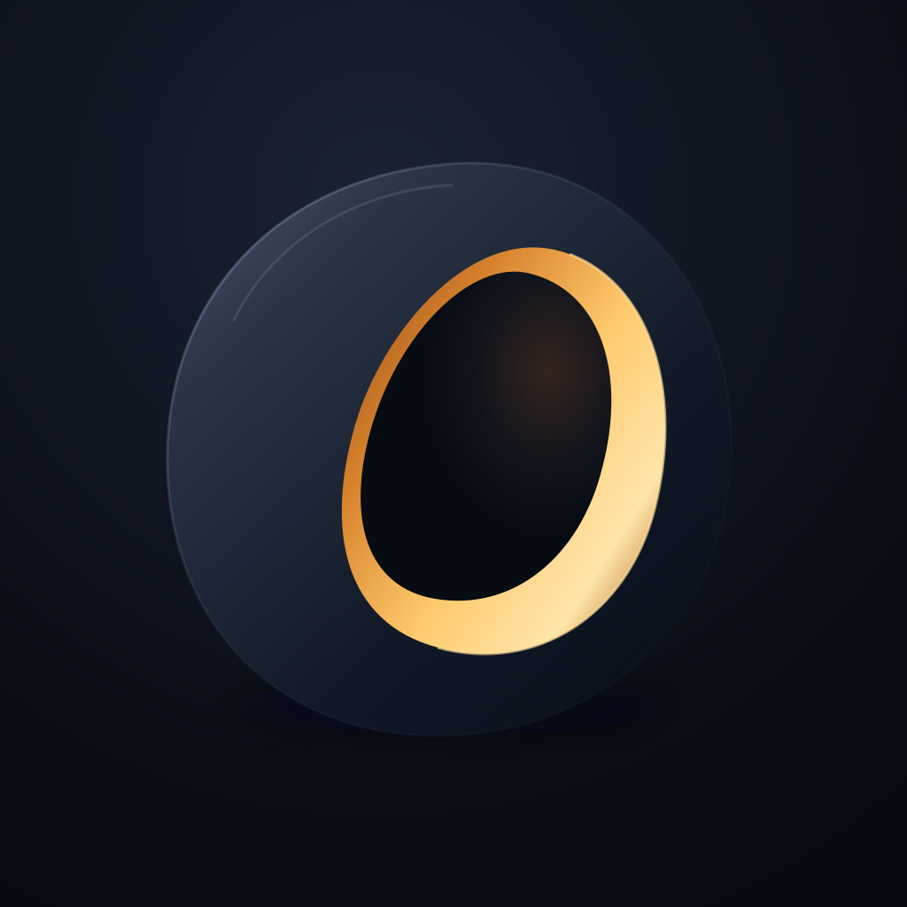
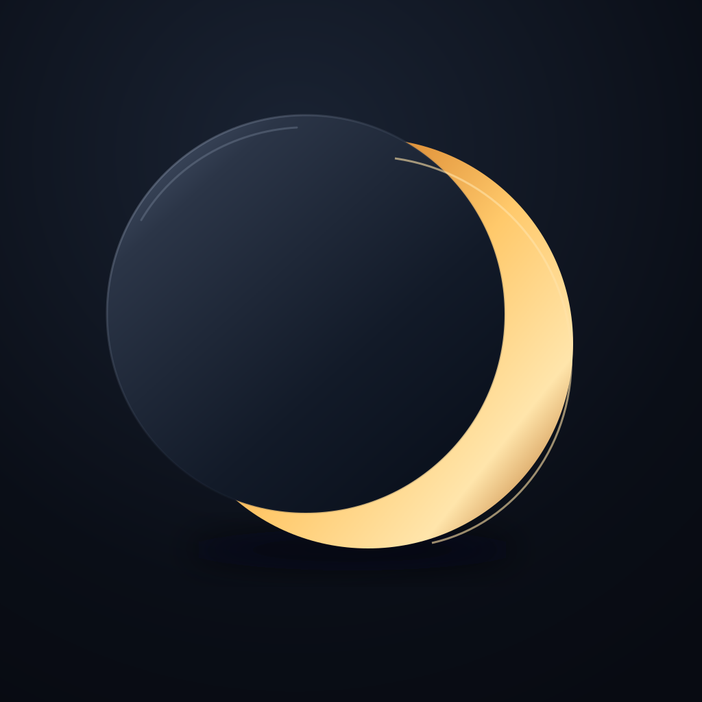

01 / Amber aperture
EXPLORE FIRSTA dark shell holding an off-center amber opening. The interior suggests something preserved and accessible.
Three smooth icon directions inspired by your moon: a midnight exterior, warm interior light, and a sense of depth.

A dark shell holding an off-center amber opening. The interior suggests something preserved and accessible.
A continuous curved ribbon with a warm inner face. The crescent emerges from the fold.

Two smooth overlapping discs expose a warm edge. The simplest silhouette of the three.
Closest to the original. The character strokes get fragile when the icon shrinks.
Recommended app icon. The same phase and facets, with enough weight to survive at small sizes.
Solid underneath, glyph texture on the amber face. A bridge between app icon and brand artwork.
A dark form contains a warm, visible opening. Smooth curves carry the same sense of hidden depth as your moon. Keep the form large and the lighting restrained.
The downloads are full square artwork. Rounded corners here are a visual preview. For Icon Composer, keep the midnight background and moon foreground as separate layers, then check dark, clear, and tinted appearances in the tool.
Apple app icon guidance ↗{kind=link}
{kind=link}
{kind=link}